On 21 April 2023, the Colosseum became the stage for an unprecedented spectacle: HUMANLANDS — Eternal Evolution, the grand finale of Rome’s candidacy for the World Expo 2030. For the first time in history, the Terrazza di Venere overlooking the Colosseum was used as a performance space, while the ancient amphitheatre itself served as a monumental canvas for video-mapping projections and a choreographed swarm of 500 luminous drones.
Conceived as a celebration of the bond between people and territory, the event brought together étoile Eleonora Abbagnato and her daughter Julia Balzaretti, singer Malika Ayane, and pianist-composer Dardust with the Sunset Strings Quintet in a narrative guided by Gaia — a young girl from Rome embodying the earth’s desire for humanity and evolution.
Il 21 aprile 2023, il Colosseo è diventato il palcoscenico di uno spettacolo senza precedenti: HUMANLANDS — Eternal Evolution, il gran finale della candidatura di Roma per l’Expo Mondiale 2030. Per la prima volta nella storia, la Terrazza di Venere affacciata sul Colosseo è stata utilizzata come spazio performativo, mentre l’antico anfiteatro ha fatto da tela monumentale per proiezioni di video-mapping e una coreografia di 500 droni luminosi.
Pensato come celebrazione del legame tra uomo e territorio, l’evento ha riunito l’étoile Eleonora Abbagnato con la figlia Julia Balzaretti, la cantante Malika Ayane e il pianista e compositore Dardust con il Sunset Strings Quintet in una narrazione guidata da Gaia — una bambina di Roma che incarna il desiderio di umanità e di evoluzione della terra.
Le 21 avril 2023, le Colisée est devenu la scène d’un spectacle sans précédent : HUMANLANDS — Eternal Evolution, le grand final de la candidature de Rome pour l’Exposition Universelle 2030. Pour la première fois de l’histoire, la Terrazza di Venere surplombant le Colisée a été utilisée comme espace de performance, tandis que l’ancien amphithéâtre servait de toile monumentale pour des projections de vidéo-mapping et une chorégraphie de 500 drones lumineux.
Conçu comme une célébration du lien entre l’homme et le territoire, l’événement a réuni l’étoile Eleonora Abbagnato et sa fille Julia Balzaretti, la chanteuse Malika Ayane et le pianiste-compositeur Dardust avec le Sunset Strings Quintet dans un récit guidé par Gaia — une jeune fille de Rome incarnant le désir d’humanité et d’évolution de la terre.
Awards

Lo Spettacolo — HUMANLANDS
Organized during the inspection visit of the Bureau International des Expositions (BIE) delegates, HUMANLANDS transformed the Colosseum into a living symbol of Rome’s vision for the future. The five core values of the candidacy — Inclusion, Culture, Innovation, Freedom, and Diversity — were woven into every performance.
The evening opened with Malika Ayane singing Domenico Modugno’s iconic “Volare” from a terrace overlooking the Colosseum. The étoile Eleonora Abbagnato, director of the Corps de Ballet of the Teatro dell’Opera di Roma, then took the stage with her daughter Julia Balzaretti in an original pas de deux — a mother-daughter duet that became one of the most moving moments of the night. Choreographers Sasha Riva and Simone Repele joined the dancers while Dardust (Dario Faini) performed live at the piano with the Sunset Strings Quintet.
The grand finale saw a “Bridge of Light” connecting the Colosseum to the Vela di Calatrava at Tor Vergata — the site chosen for Expo 2030. A choir of 100 students from Roman schools performed a contemporary arrangement of Verdi’s “Va’ Pensiero”, directed by Maestro Stefano Barzan.
Organizzato durante la visita ispettiva dei delegati del Bureau International des Expositions (BIE), HUMANLANDS ha trasformato il Colosseo in un simbolo vivente della visione di Roma per il futuro. I cinque valori fondamentali della candidatura — Inclusione, Cultura, Innovazione, Libertà e Diversità — sono stati intrecciati in ogni performance.
La serata si è aperta con Malika Ayane che ha cantato l’iconica “Volare” di Domenico Modugno da una terrazza affacciata sul Colosseo. L’étoile Eleonora Abbagnato, direttrice del Corpo di Ballo del Teatro dell’Opera di Roma, è poi salita sul palco con la figlia Julia Balzaretti in un pas de deux originale — un duetto madre-figlia diventato uno dei momenti più emozionanti della serata. I coreografi Sasha Riva e Simone Repele si sono uniti ai danzatori mentre Dardust (Dario Faini) suonava dal vivo al pianoforte con il Sunset Strings Quintet.
Il gran finale ha visto un “Ponte di Luce” collegare il Colosseo alla Vela di Calatrava a Tor Vergata — il sito scelto per l’Expo 2030. Un coro di 100 studenti delle scuole romane ha eseguito un arrangiamento contemporaneo del “Va’ Pensiero” di Verdi, diretto dal Maestro Stefano Barzan.
Organisé lors de la visite d’inspection des délégués du Bureau International des Expositions (BIE), HUMANLANDS a transformé le Colisée en un symbole vivant de la vision de Rome pour l’avenir. Les cinq valeurs fondamentales de la candidature — Inclusion, Culture, Innovation, Liberté et Diversité — ont été tissées dans chaque performance.
La soirée s’est ouverte avec Malika Ayane interprétant l’iconique « Volare » de Domenico Modugno depuis une terrasse surplombant le Colisée. L’étoile Eleonora Abbagnato, directrice du Corps de Ballet du Teatro dell’Opera di Roma, est ensuite montée sur scène avec sa fille Julia Balzaretti dans un pas de deux original — un duo mère-fille devenu l’un des moments les plus émouvants de la soirée. Les chorégraphes Sasha Riva et Simone Repele ont rejoint les danseurs tandis que Dardust (Dario Faini) jouait en direct au piano avec le Sunset Strings Quintet.
Le grand final a vu un « Pont de Lumière » relier le Colisée à la Vela di Calatrava à Tor Vergata — le site choisi pour l’Expo 2030. Un chœur de 100 élèves des écoles romaines a interprété un arrangement contemporain du « Va’ Pensiero » de Verdi, dirigé par le Maestro Stefano Barzan.
Malika Ayane
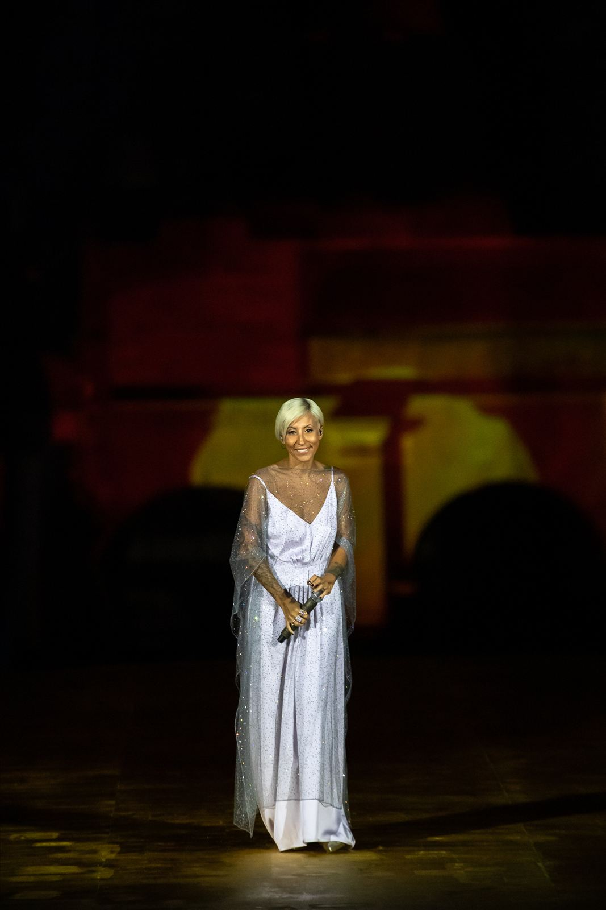
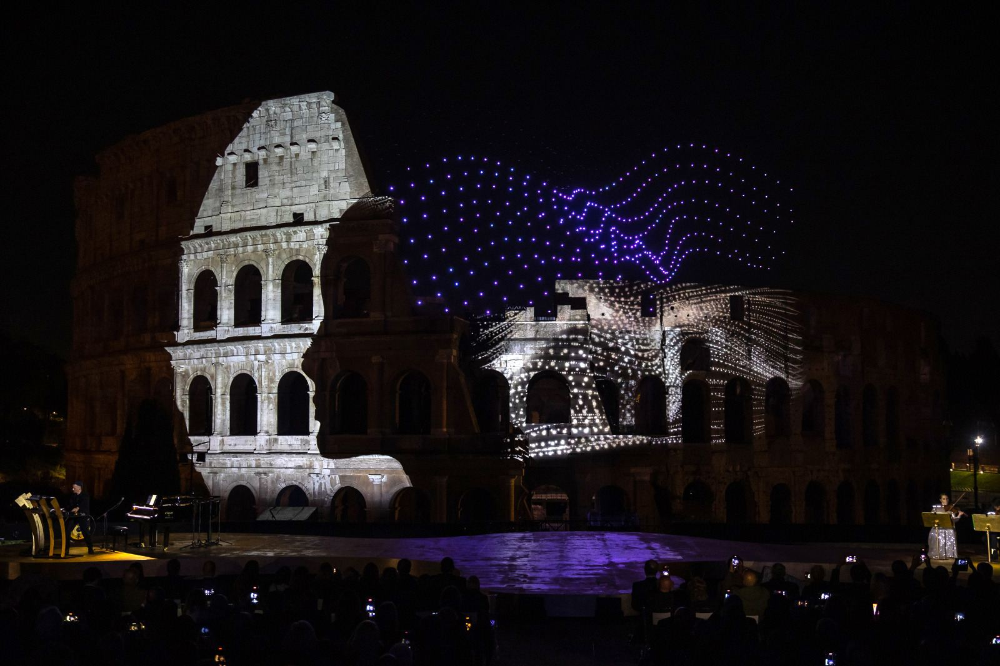
Dardust & Sunset Strings Quintet
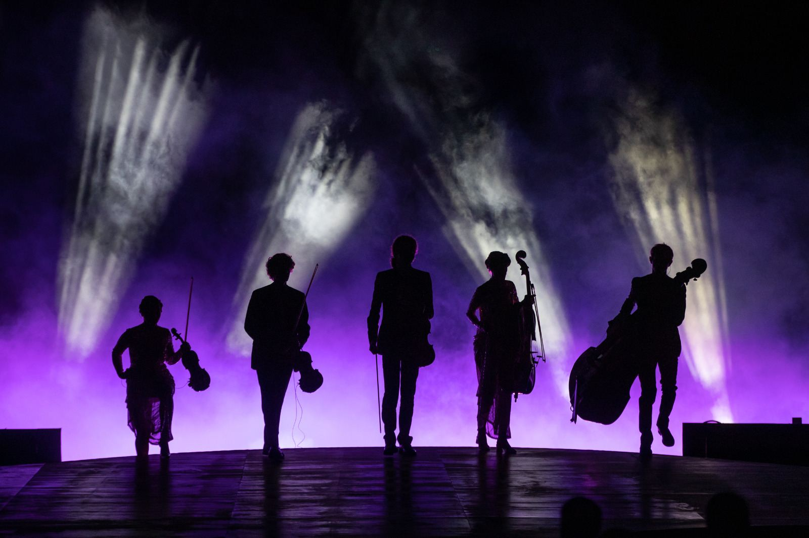
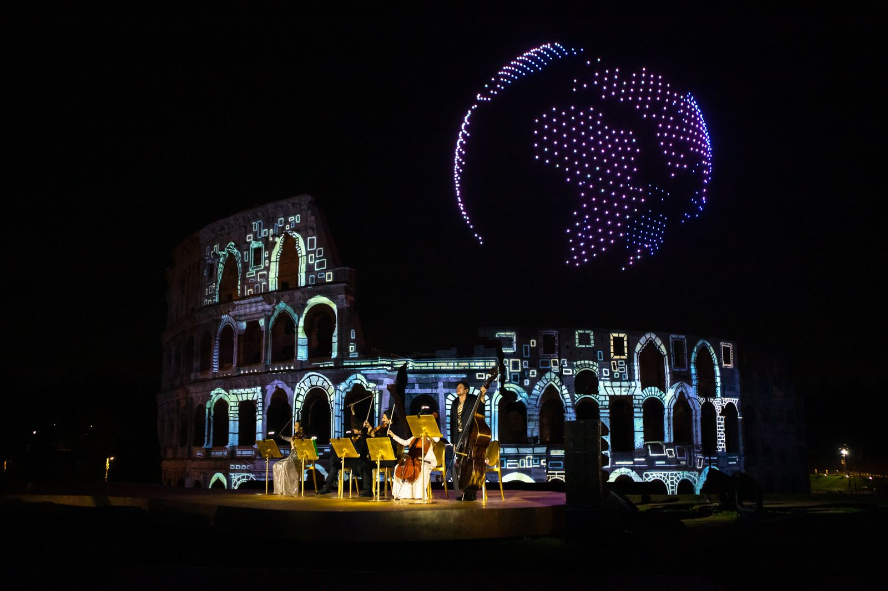
Eleonora Abbagnato & Julia Balzaretti
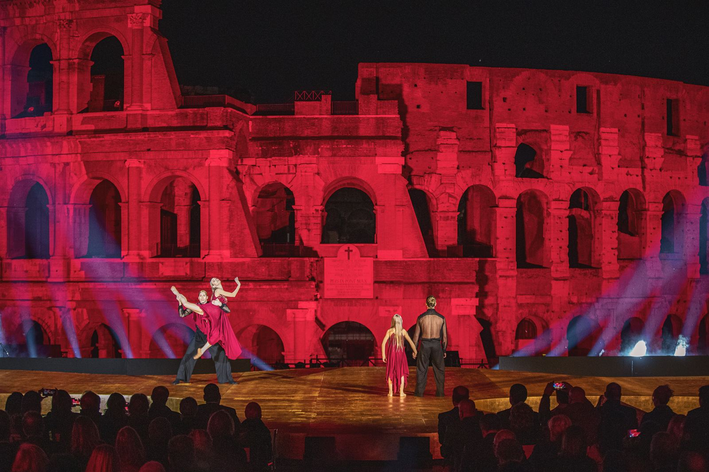
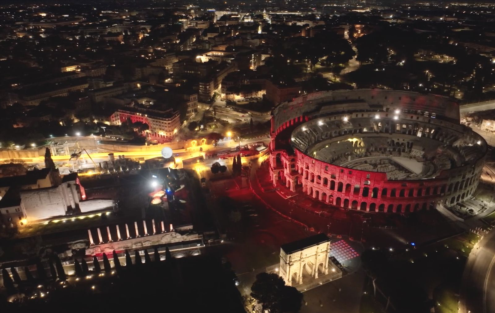
I Protagonisti
Una notte sola, e un cast in cui ogni nome porta con sé una vita di palcoscenico. HUMANLANDS non è stato un evento corale qualunque: è stato un atto di fiducia reciproca tra Cristian Taraborrelli e i più alti rappresentanti della scena italiana contemporanea. Una compagnia ideale chiamata a raccontare l’Italia all’ispezione del BIE attraverso la propria biografia artistica.
A single night, and a cast in which every name carries a lifetime on stage. HUMANLANDS was no ordinary ensemble event: it was an act of mutual trust between Cristian Taraborrelli and the highest representatives of contemporary Italian performance. An ideal company called to narrate Italy to the BIE inspectors through their own artistic biographies.
Une seule nuit, et une distribution où chaque nom porte avec lui toute une vie de scène. HUMANLANDS n’a pas été un événement choral comme les autres : ce fut un acte de confiance mutuelle entre Cristian Taraborrelli et les plus hauts représentants de la scène italienne contemporaine. Une compagnie idéale convoquée pour raconter l’Italie aux inspecteurs du BIE à travers leur propre biographie artistique.
Abbagnato
Eleonora Abbagnato
Étoile · Pas de Deux con Julia Balzaretti
Palermitana, classe 1978, Eleonora Abbagnato è la prima italiana nominata étoile dell’Opéra di Parigi dai tempi di Carlotta Zambelli (1898). Entrata nel corps de ballet nel 1996, è salita rapidamente i gradi fino alla nomina a étoile nel marzo 2013, durante una rappresentazione di Carmen di Roland Petit. Dal 2015 dirige il Corpo di Ballo del Teatro dell’Opera di Roma, e dal 2022 anche la Scuola di Danza dell’Opera. Ha danzato per Roland Petit, Pina Bausch, Mats Ek, Maurice Béjart.
Per HUMANLANDS, Abbagnato sale sulla Terrazza di Venere insieme alla figlia Julia Balzaretti in un pas de deux originale: due generazioni che si parlano sopra duemila anni di pietra. La scelta non è protocollare — è il manifesto stesso del titolo «Eternal Evolution».
Born in Palermo in 1978, Eleonora Abbagnato is the first Italian to be named étoile of the Paris Opéra Ballet since Carlotta Zambelli in 1898. She joined the corps de ballet in 1996 and rose rapidly through the ranks until being named étoile in March 2013, during a performance of Roland Petit’s Carmen. Since 2015 she has directed the Corps de Ballet of the Teatro dell’Opera di Roma, and since 2022 the Opera’s Dance School as well. She has danced for Roland Petit, Pina Bausch, Mats Ek and Maurice Béjart.
For HUMANLANDS, Abbagnato steps onto the Terrazza di Venere with her daughter Julia Balzaretti in an original pas de deux: two generations speaking to each other above two thousand years of stone. The choice is not protocol — it is the very manifesto of the title “Eternal Evolution”.
Née à Palerme en 1978, Eleonora Abbagnato est la première Italienne nommée étoile de l’Opéra de Paris depuis Carlotta Zambelli (1898). Entrée dans le corps de ballet en 1996, elle gravit rapidement les échelons jusqu’à sa nomination en mars 2013, lors d’une représentation de Carmen de Roland Petit. Depuis 2015, elle dirige le Corps de Ballet du Teatro dell’Opera di Roma, et depuis 2022 également l’École de Danse de l’Opéra. Elle a dansé pour Roland Petit, Pina Bausch, Mats Ek, Maurice Béjart.
Pour HUMANLANDS, Abbagnato monte sur la Terrazza di Venere avec sa fille Julia Balzaretti dans un pas de deux original : deux générations qui se parlent au-dessus de deux mille ans de pierre. Le choix n’est pas protocolaire — il est le manifeste même du titre « Eternal Evolution ».
(Dario Faini)
Dardust — Dario Faini
Pianista e Compositore · Live con il Sunset Strings Quintet
Nato ad Ascoli Piceno nel 1976, Dario Faini — in arte Dardust o DRD — è uno dei pochi musicisti italiani capaci di muoversi con uguale autorità tra il repertorio classico per pianoforte e l’elettronica minimale nordica (le sue trilogie sono state registrate tra Berlino, Reykjavík e Londra). Come autore e produttore ha firmato più di 100 dischi di platino e ha co-scritto e prodotto «Soldi» di Mahmood, vincitore del Festival di Sanremo 2019. Ha lavorato con Mengoni, Elodie, Annalisa, Ermal Meta, Lazza, Angelina Mango.
Tre anni dopo HUMANLANDS, Dardust firma Italian Fantasy, la colonna sonora ufficiale dei Giochi Olimpici e Paralimpici Milano-Cortina 2026. La traiettoria che da quella sera al Colosseo conduce alle cerimonie olimpiche è una linea retta.
Born in Ascoli Piceno in 1976, Dario Faini — known as Dardust or DRD — is one of the few Italian musicians able to move with equal authority between classical piano repertoire and Nordic minimal electronics (his trilogies have been recorded across Berlin, Reykjavík and London). As songwriter and producer he has earned more than 100 platinum records and co-wrote and produced “Soldi” for Mahmood, winner of the 2019 Sanremo Festival. He has worked with Mengoni, Elodie, Annalisa, Ermal Meta, Lazza, Angelina Mango.
Three years after HUMANLANDS, Dardust composed Italian Fantasy, the official soundtrack of the Milano-Cortina 2026 Olympic and Paralympic Winter Games. The trajectory from that night at the Colosseum to the Olympic ceremonies is a straight line.
Né à Ascoli Piceno en 1976, Dario Faini — alias Dardust ou DRD — est l’un des rares musiciens italiens capables de se mouvoir avec une égale autorité entre le répertoire classique pour piano et l’électronique minimale nordique (ses trilogies ont été enregistrées entre Berlin, Reykjavík et Londres). Comme auteur et producteur, il a signé plus de 100 disques de platine et a co-écrit et produit « Soldi » de Mahmood, vainqueur du Festival de Sanremo 2019. Il a travaillé avec Mengoni, Elodie, Annalisa, Ermal Meta, Lazza, Angelina Mango.
Trois ans après HUMANLANDS, Dardust signe Italian Fantasy, la bande originale officielle des Jeux Olympiques et Paralympiques d’hiver Milano-Cortina 2026. La trajectoire qui de cette nuit au Colisée mène aux cérémonies olympiques est une ligne droite.
Ayane
Malika Ayane
Voce · Apertura con «Volare» di Domenico Modugno
Milanese di origini italo-marocchine, classe 1984, Malika Ayane è un caso unico nella canzone italiana: a undici anni entra nel Coro di Voci Bianche del Teatro alla Scala, dove canta per sette stagioni, e in parallelo studia violoncello al Conservatorio «Giuseppe Verdi» di Milano. Scoperta da Caterina Caselli per Sugar Music, debutta a Sanremo Giovani nel 2009 con «Come foglie» di Giuliano Sangiorgi. Vince due volte il Premio della Critica «Mia Martini» (2010 e 2015). Tornata a Sanremo 2026 con «Animali notturni».
Affidare a Malika l’apertura di HUMANLANDS con «Volare» di Modugno significava saldare due Italie: quella popolare del miracolo economico e quella meticcia, colta, contemporanea. Una sola voce per dire che entrambe sono Roma.
Milanese with Italian-Moroccan roots, born in 1984, Malika Ayane is a unique case in Italian song: at eleven she joined the White Voices Choir of Teatro alla Scala, where she sang for seven seasons, while studying cello at Milan’s “Giuseppe Verdi” Conservatory. Discovered by Caterina Caselli for Sugar Music, she debuted at Sanremo Giovani in 2009 with Giuliano Sangiorgi’s “Come foglie”. She has twice won the “Mia Martini” Critics’ Prize (2010 and 2015) and returned to Sanremo 2026 with “Animali notturni”.
Entrusting Malika with the opening of HUMANLANDS singing Modugno’s “Volare” meant welding together two Italies: the popular Italy of the economic miracle and the métisse, cultivated, contemporary one. A single voice to say that both are Rome.
Milanaise d’origines italo-marocaines, née en 1984, Malika Ayane est un cas unique de la chanson italienne : à onze ans, elle entre dans le Chœur des Voix Blanches du Teatro alla Scala, où elle chantera sept saisons, tout en étudiant le violoncelle au Conservatoire « Giuseppe Verdi » de Milan. Découverte par Caterina Caselli pour Sugar Music, elle débute à Sanremo Giovani en 2009 avec « Come foglie » de Giuliano Sangiorgi. Elle remporte deux fois le Prix de la Critique « Mia Martini » (2010 et 2015) et revient à Sanremo 2026 avec « Animali notturni ».
Confier à Malika l’ouverture de HUMANLANDS avec « Volare » de Modugno, c’était souder deux Italie : celle populaire du miracle économique et celle métisse, cultivée, contemporaine. Une seule voix pour dire que les deux sont Rome.
&
Simone Repele
Sasha Riva & Simone Repele
Coreografi e Danzatori
Sasha Riva (1991, Virginia, cresciuto in Italia) e Simone Repele (1993) si sono formati entrambi alla scuola dell’Hamburg Ballett di John Neumeier. Riva è passato dal Ballet du Grand Théâtre de Genève e dal Ballet de Bordeaux, Repele dallo Staatsballett Berlin e dal Ballet de l’Opéra du Rhin. Nel 2020 fondano Riva & Repele Dance Company, definita dalla critica «poeti della danza» per il loro vocabolario neoclassico-contemporaneo. Sono stati invitati a creare per Aterballetto e per il Béjart Ballet Lausanne.
A febbraio 2026 firmano la coreografia della Cerimonia di Apertura dei Giochi Olimpici Invernali Milano-Cortina 2026. Il ponte fra il Colosseo del 2023 e lo Stadio di Milano del 2026 passa quindi attraverso lo stesso paio di mani.
Sasha Riva (1991, Virginia, raised in Italy) and Simone Repele (1993) both trained at John Neumeier’s Hamburg Ballett school. Riva passed through the Ballet du Grand Théâtre de Genève and the Ballet de Bordeaux, Repele through the Staatsballett Berlin and the Ballet de l’Opéra du Rhin. In 2020 they founded Riva & Repele Dance Company, hailed by critics as “poets of dance” for their neoclassical-contemporary vocabulary. They have been commissioned by Aterballetto and by the Béjart Ballet Lausanne.
In February 2026 they choreographed the Opening Ceremony of the Milano-Cortina 2026 Olympic Winter Games. The bridge from the 2023 Colosseum to the 2026 Milan Stadium passes through the same pair of hands.
Sasha Riva (1991, Virginie, élevé en Italie) et Simone Repele (1993) se sont tous deux formés à l’école du Hamburg Ballett de John Neumeier. Riva est passé par le Ballet du Grand Théâtre de Genève et le Ballet de Bordeaux, Repele par le Staatsballett Berlin et le Ballet de l’Opéra du Rhin. En 2020, ils fondent Riva & Repele Dance Company, saluée par la critique comme les « poètes de la danse » pour leur vocabulaire néoclassique-contemporain. Ils ont été commande par Aterballetto et par le Béjart Ballet Lausanne.
En février 2026, ils signent la chorégraphie de la Cérémonie d’Ouverture des Jeux Olympiques d’Hiver Milano-Cortina 2026. Le pont entre le Colisée de 2023 et le Stade de Milan de 2026 passe donc par la même paire de mains.
Buscemi
Angela Buscemi
Costumi · Collaboratrice Storica di Cristian Taraborrelli
Nata a Messina nel 1971, Angela Buscemi si forma all’Istituto d’Arte di Messina e all’Accademia Internazionale d’Alta Moda e d’Arte del Costume Koefia di Roma. Nel 2001 riceve la nomination IMTA come miglior costumista per My Fair Lady. La sua firma figura nei cartelloni del Mariinsky di San Pietroburgo (Don Carlo), del Teatro dell’Opera di Roma (Marie Galante, La Sonnambula), del Teatro Vittorio Emanuele di Messina (Norma, Cavalleria Rusticana, La Rondine, Pagliacci, Così fan tutte). Dal 2006 collabora stabilmente con il regista Giorgio Barberio Corsetti.
Il sodalizio con Cristian Taraborrelli è uno dei più lunghi e fecondi del teatro musicale italiano contemporaneo: insieme hanno firmato La Sonnambula di Bellini all’Opera di Roma e al Teatro delle Muse di Ancona, Marie Galante di Weill, e numerose produzioni in cui costume e scena nascono come un unico organismo poetico. Per HUMANLANDS, Buscemi traduce il vocabolario dorato del palco in tessuti che catturano la luce, accompagnando l’étoile e i danzatori in una continuità visiva totale tra corpo e scenografia.
Born in Messina in 1971, Angela Buscemi trained at the Istituto d’Arte in Messina and at the Accademia Internazionale d’Alta Moda e d’Arte del Costume Koefia in Rome. In 2001 she received the IMTA nomination for best costume design for My Fair Lady. Her signature appears in the playbills of the Mariinsky in Saint Petersburg (Don Carlo), the Teatro dell’Opera di Roma (Marie Galante, La Sonnambula), and the Teatro Vittorio Emanuele in Messina (Norma, Cavalleria Rusticana, La Rondine, Pagliacci, Così fan tutte). Since 2006 she has been a regular collaborator of stage director Giorgio Barberio Corsetti.
Her partnership with Cristian Taraborrelli is one of the longest and most fruitful in contemporary Italian music theatre: together they have signed Bellini’s La Sonnambula at the Opera di Roma and at the Teatro delle Muse in Ancona, Weill’s Marie Galante, and numerous productions in which costume and set are born as a single poetic organism. For HUMANLANDS, Buscemi translates the golden vocabulary of the stage into fabrics that catch the light, accompanying the étoile and the dancers in a total visual continuity between body and set.
Née à Messine en 1971, Angela Buscemi se forme à l’Istituto d’Arte de Messine et à l’Accademia Internazionale d’Alta Moda e d’Arte del Costume Koefia à Rome. En 2001, elle reçoit la nomination IMTA comme meilleure costumière pour My Fair Lady. Sa signature figure aux affiches du Mariinsky de Saint-Pétersbourg (Don Carlo), du Teatro dell’Opera di Roma (Marie Galante, La Sonnambula) et du Teatro Vittorio Emanuele de Messine (Norma, Cavalleria Rusticana, La Rondine, Pagliacci, Così fan tutte). Depuis 2006, elle collabore régulièrement avec le metteur en scène Giorgio Barberio Corsetti.
Son compagnonnage avec Cristian Taraborrelli est l’un des plus longs et féconds du théâtre musical italien contemporain : ensemble ils ont signé La Sonnambula de Bellini à l’Opera di Roma et au Teatro delle Muse d’Ancona, Marie Galante de Weill, et de nombreuses productions où costume et scène naissent comme un unique organisme poétique. Pour HUMANLANDS, Buscemi traduit le vocabulaire doré de la scène en tissus qui captent la lumière, accompagnant l’étoile et les danseurs dans une continuité visuelle totale entre corps et décor.
Julia Balzaretti
Giovane Danzatrice
Figlia di Eleonora Abbagnato e dell’avvocato Federico Balzaretti, Julia segue la formazione classica sulle orme della madre. La sua presenza nel pas de deux di HUMANLANDS — uno dei suoi primi grandi palcoscenici pubblici — trasforma il momento coreografico in un atto biografico: la trasmissione del mestiere come tema scenico.
Daughter of Eleonora Abbagnato and lawyer Federico Balzaretti, Julia follows the classical training in her mother’s footsteps. Her presence in the HUMANLANDS pas de deux — one of her first major public stages — turns the choreographic moment into a biographical act: the transmission of craft as scenic theme.
Fille d’Eleonora Abbagnato et de l’avocat Federico Balzaretti, Julia suit la formation classique sur les traces de sa mère. Sa présence dans le pas de deux de HUMANLANDS — l’une de ses premières grandes scènes publiques — transforme le moment chorégraphique en acte biographique : la transmission du métier comme thème scénique.
Maestro Stefano Barzan
Direzione Coro · 100 Studenti Romani · «Va’ Pensiero»
Direttore d’orchestra, compositore e arrangiatore, Stefano Barzan ha firmato gli arrangiamenti corali di numerose grandi cerimonie italiane. Per HUMANLANDS dirige cento studenti delle scuole romane in un arrangiamento contemporaneo del «Va’ Pensiero» verdiano: il finale civile del lavoro.
Conductor, composer and arranger, Stefano Barzan has signed the choral arrangements of numerous major Italian ceremonies. For HUMANLANDS he conducts one hundred Roman school students in a contemporary arrangement of Verdi’s “Va’ Pensiero”: the civic finale of the piece.
Chef d’orchestre, compositeur et arrangeur, Stefano Barzan a signé les arrangements choraux de nombreuses grandes cérémonies italiennes. Pour HUMANLANDS, il dirige cent élèves des écoles romaines dans un arrangement contemporain du « Va’ Pensiero » de Verdi : le final civique de l’œuvre.
Dal Colosseo a Milano-Cortina 2026
Tre anni dopo HUMANLANDS, due dei suoi protagonisti tornano insieme su un altro palco mondiale: Dardust firma Italian Fantasy, la colonna sonora ufficiale dei Giochi Olimpici e Paralimpici Milano-Cortina 2026; Sasha Riva e Simone Repele coreografano la Cerimonia di Apertura olimpica. La notte del Colosseo non era stata una parentesi spettacolare, ma un prologo: la prova generale — per casting e visione — del modo italiano di raccontarsi al mondo. La Cerimonia di Chiusura paralimpica, Italian Souvenir — cui Cristian Taraborrelli partecipa direttamente con il suo Creative Strike Team — chiude un cerchio aperto al Colosseo.
Three years after HUMANLANDS, two of its protagonists meet again on another world stage: Dardust composes Italian Fantasy, the official soundtrack of the Milano-Cortina 2026 Olympic and Paralympic Games; Sasha Riva and Simone Repele choreograph the Olympic Opening Ceremony. The night at the Colosseum was not a spectacular parenthesis but a prologue: the dress rehearsal — in casting and in vision — of the Italian way of telling itself to the world. The Paralympic Closing Ceremony, Italian Souvenir — in which Cristian Taraborrelli takes part directly with his Creative Strike Team — closes a circle opened at the Colosseum.
Trois ans après HUMANLANDS, deux de ses protagonistes se retrouvent sur une autre scène mondiale : Dardust signe Italian Fantasy, la bande originale officielle des Jeux Olympiques et Paralympiques Milano-Cortina 2026 ; Sasha Riva et Simone Repele chorégraphient la Cérémonie d’Ouverture olympique. La nuit du Colisée n’était pas une parenthèse spectaculaire mais un prologue : la répétition générale — en casting et en vision — de la manière italienne de se raconter au monde. La Cérémonie de Clôture paralympique, Italian Souvenir — à laquelle Cristian Taraborrelli participe directement avec son Creative Strike Team — ferme un cercle ouvert au Colisée.
Team Creativo
Artisti
La Visione — Il Palco Dorato
“The choice of gold”, explains the set designer Cristian Taraborrelli, “comes from the fascination of a noble, pure element that has crossed history, and from the news of the discovery of some fragments of the gold leaf during the restoration of the Temple of Venus: an embrace of brilliance between past and present.”
The stage was conceived as an organic, sinuous form — a golden landscape emerging from the earth at the foot of the Colosseum. Its flowing curves evoked the concept of Humanlands: a terrain shaped by human aspiration, where ancient heritage meets contemporary vision. The golden surface, illuminated by a choreography of light, transformed the Terrazza di Venere into a radiant platform for music, dance, and multimedia spectacle.
“La scelta dell’oro”, spiega lo scenografo Cristian Taraborrelli, “nasce dal fascino di un elemento nobile, puro, che ha attraversato la storia, e dalla notizia del ritrovamento di alcuni frammenti della foglia d’oro durante il restauro del Tempio di Venere: un abbraccio di luce tra passato e presente.”
Il palco è stato concepito come una forma organica e sinuosa — un paesaggio dorato che emerge dalla terra ai piedi del Colosseo. Le sue curve fluide evocano il concetto di Humanlands: un territorio plasmato dall’aspirazione umana, dove il patrimonio antico incontra la visione contemporanea. La superficie dorata, illuminata da una coreografia di luci, ha trasformato la Terrazza di Venere in una piattaforma radiante per musica, danza e spettacolo multimediale.
« Le choix de l’or », explique le scénographe Cristian Taraborrelli, « vient de la fascination pour un élément noble, pur, qui a traversé l’histoire, et de la nouvelle de la découverte de fragments de feuille d’or lors de la restauration du Temple de Vénus : une étreinte de brillance entre passé et présent. »
La scène a été conçue comme une forme organique et sinueuse — un paysage doré émergeant de la terre au pied du Colisée. Ses courbes fluides évoquent le concept de Humanlands : un territoire façonné par l’aspiration humaine, où le patrimoine ancien rencontre la vision contemporaine. La surface dorée, illuminée par une chorégraphie de lumières, a transformé la Terrazza di Venere en une plateforme rayonnante pour la musique, la danse et le spectacle multimédia.
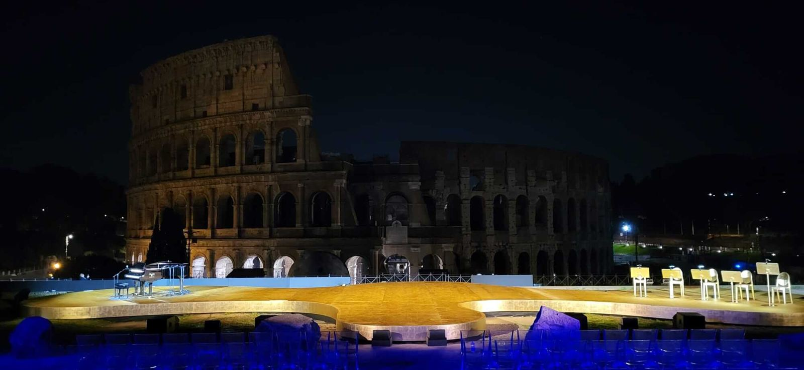
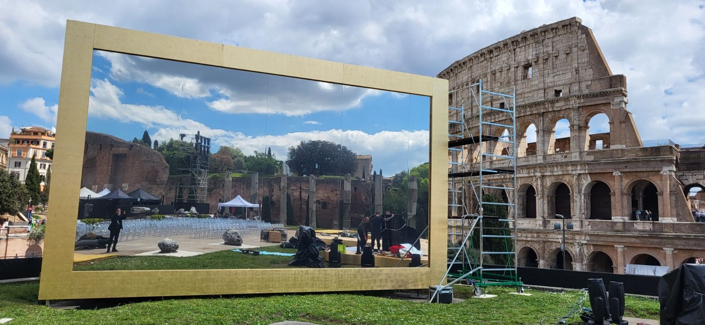
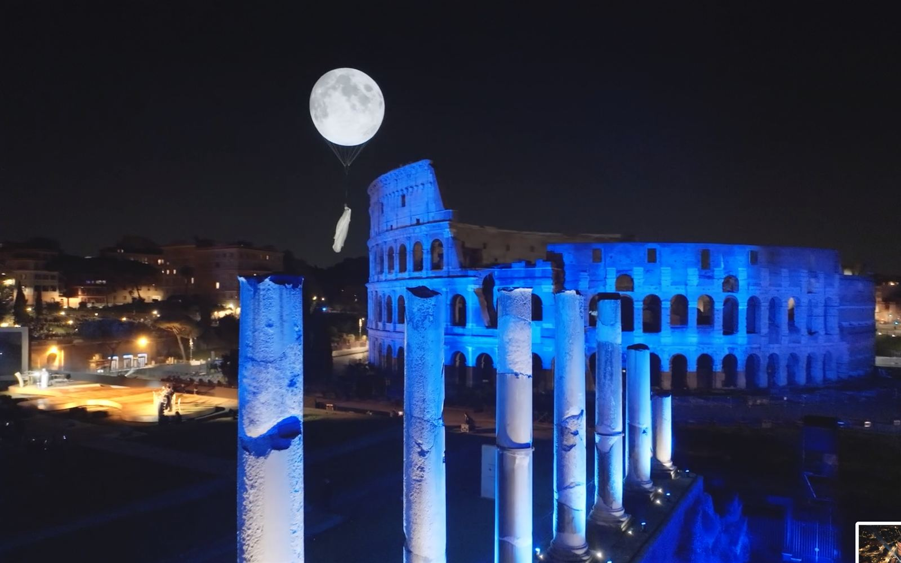
Set Design Renderings
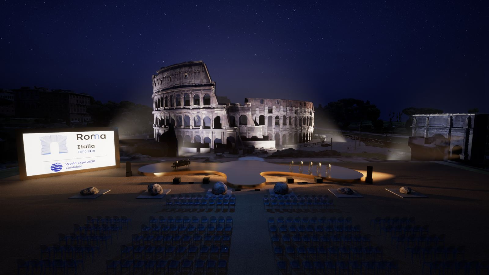
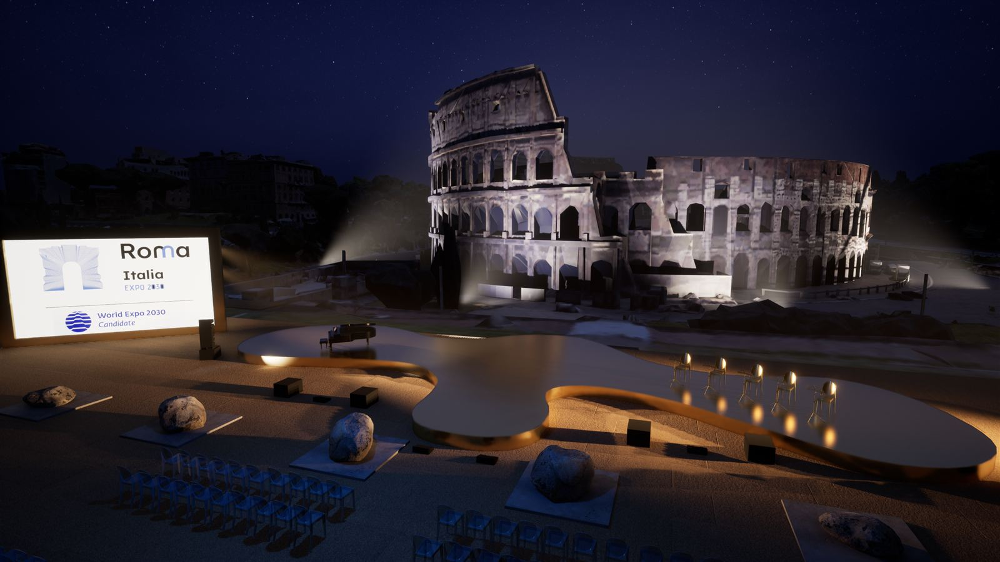
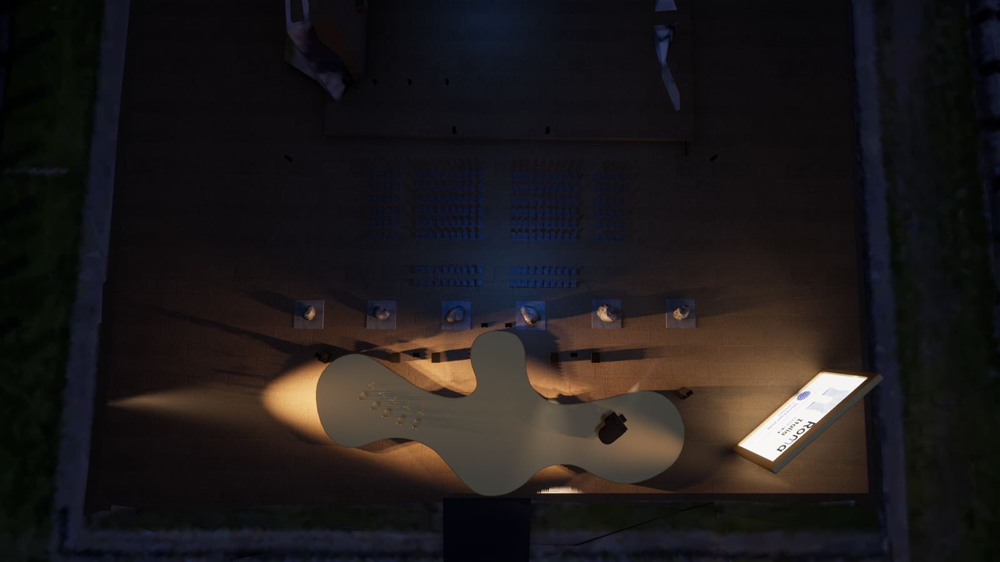
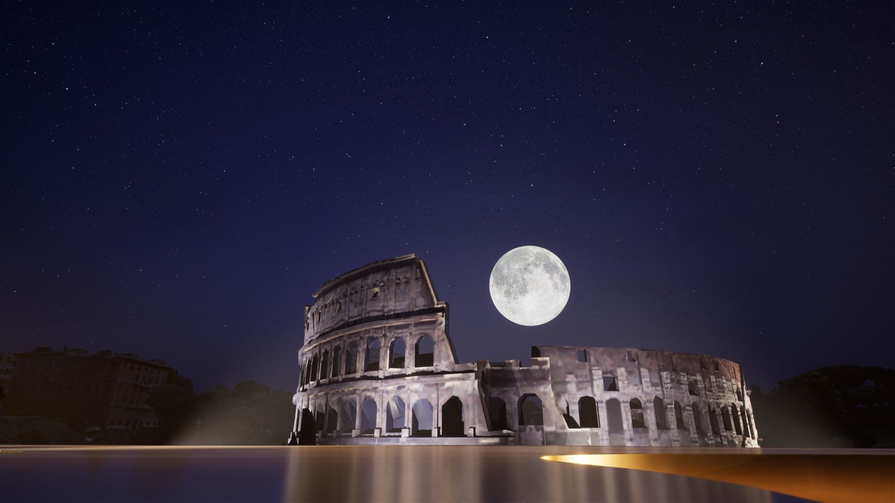
La Venue — Il Colosseo
Il Colosseo, o Anfiteatro Flavio, è il monumento più iconico di Roma e il più grande anfiteatro mai costruito. Inaugurato nell’80 d.C. sotto l’imperatore Tito, poteva ospitare fino a 50.000 spettatori per i giochi gladiatori e le venationes. La sua struttura ellittica — 188 metri di lunghezza, 156 di larghezza, 48 di altezza — rimane un capolavoro di ingegneria romana.
Lo spettacolo HUMANLANDS si è svolto sulla Terrazza di Venere — l’area che sorge sui resti del Tempio di Venere e Roma, progettato dall’imperatore Adriano nel 135 d.C. È stata la prima volta in assoluto che questa terrazza è stata utilizzata come spazio performativo, offrendo una vista unica sull’anfiteatro illuminato e sulla Via dei Fori Imperiali.
The Colosseum, or Flavian Amphitheatre, is the most iconic monument of Rome and the largest amphitheatre ever built. Inaugurated in 80 AD under Emperor Titus, it could hold up to 50,000 spectators for gladiatorial games and venationes. Its elliptical structure — 188 metres long, 156 metres wide, 48 metres high — remains a masterpiece of Roman engineering.
The HUMANLANDS show took place on the Terrazza di Venere — the area built upon the remains of the Temple of Venus and Roma, designed by Emperor Hadrian in 135 AD. It was the very first time this terrace was ever used as a performance space, offering a unique view of the illuminated amphitheatre and the Via dei Fori Imperiali.
Le Colisée, ou Amphithéâtre Flavien, est le monument le plus emblématique de Rome et le plus grand amphithéâtre jamais construit. Inauguré en 80 apr. J.-C. sous l’empereur Titus, il pouvait accueillir jusqu’à 50 000 spectateurs pour les jeux de gladiateurs et les venationes. Sa structure elliptique — 188 mètres de long, 156 mètres de large, 48 mètres de haut — reste un chef-d’œuvre d’ingénierie romaine.
Le spectacle HUMANLANDS s’est déroulé sur la Terrazza di Venere — la zone érigée sur les vestiges du Temple de Vénus et Roma, conçu par l’empereur Hadrien en 135 apr. J.-C. C’était la toute première fois que cette terrasse était utilisée comme espace de performance, offrant une vue unique sur l’amphithéâtre illuminé et la Via dei Fori Imperiali.
Curiosità
La prima volta della Terrazza di Venere. Mai nella storia bimillenaria del Colosseo questa terrazza — che sorge sui resti del più grande tempio dell’antichità — era stata utilizzata come palcoscenico. HUMANLANDS ha scritto una pagina inedita nella storia del monumento.
L’oro del Tempio di Venere. La scelta dell’oro per il palco nasce da una scoperta reale: durante i restauri del Tempio di Venere, gli archeologi hanno trovato frammenti di foglia d’oro originali. Il palco di Taraborrelli crea così un abbraccio simbolico tra il passato e il presente.
500 droni sopra il Colosseo. Lo sciame di 500 droni luminosi ha disegnato nel cielo di Roma figure che rappresentavano i cinque continenti e il logo di Expo 2030. È stato il primo drone show mai realizzato sopra il Colosseo.
Madre e figlia. Il pas de deux tra Eleonora Abbagnato e sua figlia Julia Balzaretti è stato uno dei momenti più emozionanti della serata — un duetto che incarnava il tema del passaggio generazionale e del legame tra passato e futuro.
Il Ponte di Luce. Il gran finale ha collegato simbolicamente il Colosseo alla Vela di Calatrava a Tor Vergata — il sito designato per l’Expo — con un fascio di luce visibile a chilometri di distanza, mentre 100 studenti romani cantavano il “Va’ Pensiero” di Verdi.
The Terrazza di Venere’s first time. Never in the Colosseum’s two-thousand-year history had this terrace — built upon the remains of antiquity’s largest temple — been used as a stage. HUMANLANDS wrote an unprecedented page in the monument’s history.
The gold of the Temple of Venus. The choice of gold for the stage came from a real discovery: during restorations of the Temple of Venus, archaeologists found original gold leaf fragments. Taraborrelli’s stage thus creates a symbolic embrace between past and present.
500 drones over the Colosseum. The swarm of 500 luminous drones drew figures in Rome’s sky representing the five continents and the Expo 2030 logo. It was the first drone show ever performed above the Colosseum.
Mother and daughter. The pas de deux between Eleonora Abbagnato and her daughter Julia Balzaretti was one of the evening’s most moving moments — a duet embodying the theme of generational passage and the bond between past and future.
The Bridge of Light. The grand finale symbolically connected the Colosseum to the Vela di Calatrava at Tor Vergata — the designated Expo site — with a beam of light visible from kilometres away, while 100 Roman students sang Verdi’s “Va’ Pensiero.”
La première fois de la Terrazza di Venere. Jamais dans les deux millénaires d’histoire du Colisée cette terrasse — érigée sur les vestiges du plus grand temple de l’Antiquité — n’avait été utilisée comme scène. HUMANLANDS a écrit une page inédite dans l’histoire du monument.
L’or du Temple de Vénus. Le choix de l’or pour la scène vient d’une découverte réelle : lors des restaurations du Temple de Vénus, les archéologues ont trouvé des fragments de feuille d’or originaux. La scène de Taraborrelli crée ainsi une étreinte symbolique entre passé et présent.
500 drones au-dessus du Colisée. L’essaim de 500 drones lumineux a dessiné dans le ciel de Rome des figures représentant les cinq continents et le logo d’Expo 2030. C’était le premier drone show jamais réalisé au-dessus du Colisée.
Mère et fille. Le pas de deux entre Eleonora Abbagnato et sa fille Julia Balzaretti a été l’un des moments les plus émouvants de la soirée — un duo incarnant le thème du passage générationnel et du lien entre passé et avenir.
Le Pont de Lumière. Le grand final a relié symboliquement le Colisée à la Vela di Calatrava à Tor Vergata — le site désigné pour l’Expo — avec un faisceau lumineux visible à des kilomètres, tandis que 100 élèves romains chantaient le « Va’ Pensiero » de Verdi.
They Told About Us
“I believe what was very impressive is this unique voice that we heard, it truly seems that this project is coming together under a banner of national unity.”
“A fascinating spectacle of drones, lights and mapping illuminates the Colosseum in Rome.”
“To present its candidacy for the event, the Italian capital combined technology, culture, and poetry and proposed a reusable site.”
“The Colosseum enchants the world. A never-before-seen show lit up the Colosseum for the presentation to the delegates of the Bureau International des Expositions.”
“Rome has put forward its candidacy to host the Expo 2030 world fair with an impressive drone show titled ‘Humanlands’ over the Colosseum.”
More Press
Videos
Tags